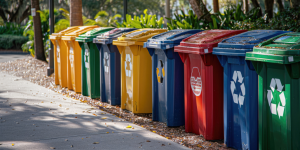
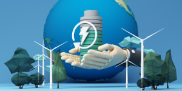

Keunggulan Biomassa

Memanfaatkan Limbah
Mengubah limbah organik menjadi sumber energi yang bermanfaat.

Energi Terbarukan
Sumber energi yang dapat diperbaharui dan tersedia dalam jumlah melimpah.

Ramah Lingkungan
Membantu mengurangi emisi karbon dengan memanfaatkan limbah organik.